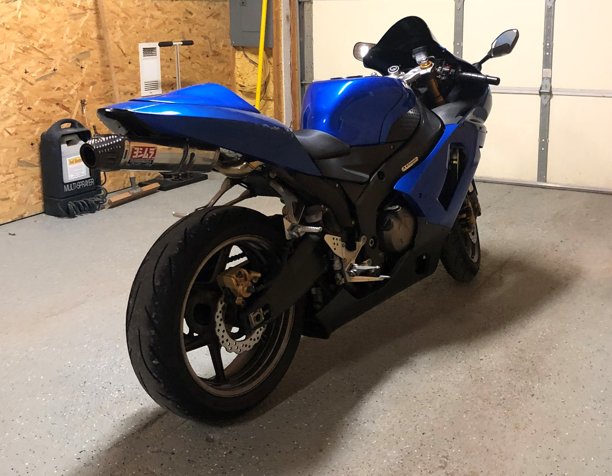
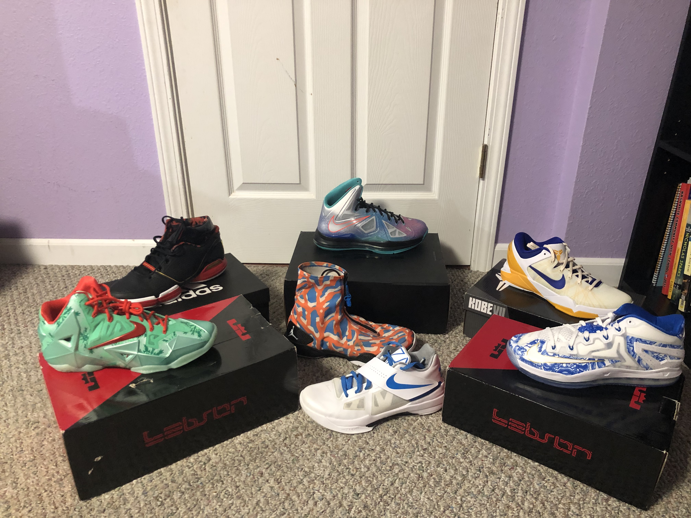

<!DOCTYPE html>
<html lang="en">
<head>
    <meta charset="UTF-8">
    <meta name="viewport" content="width=device-width, initial-scale=1.0">
    <link rel="stylesheet" href="style/index.css">
    <title>About</title>
  
</head>
<body>
</body>
</html>


<body>
    <section class="container">
        <section class ="head">
            <h2> About </h2>
                <nav>
                    <ul class="flex1">
                        <a href="index.html">Home</a>
                        <a href="about.html">About</a>
                        <a href="contact.html">Contact</a>
                        <a href="projects.html">Projects</a>
                    </ul>
                </nav>
        </section>

        <section class="body-about">
            <div class="first-about">
                
                    <p>
                        One of my biggest hobbies happens to be motorcycles.<br>
                        I have been riding on 2 wheels since I was 3 years old.<br>
                        My first dirt bike was a pw50 and this happens to be close<br>
                        to my first memories. I am now 20 and have owned 8 different<br>
                        bikes since then. Working on them, riding, anything motorcycle<br>
                        I love. 
                    </p>
            </div>
            <div class="second-about">
                
                    <p>
                        Another passion I have is sports. I believe the picture I have<br>
                        chosen speaks for my love of sports as well. Pictured is NBA legend<br>
                        Kobe Bryant. I was fortunate enough to be able to see my idol play<br>
                        in his final season at the Indianapolis Pacers arena. Kobes love for<br>
                        the game hasd tought me many lessons that not only helped me in<br>
                        athletics, but in life as well. Kobe and sports helped me realize that<br> 
                        every day is a chance to be better, a chance to seperate yourself from<br>
                        the competition. This attitude has helped me come a long way and is a<br>
                        big part of why I still hold sports so closely. 
                    </p>
            </div>
            <div class="third-about">
                
                    <p>
                        By the picture you can see I am kind of a shoe addict. These<br> are a portion
                        of my personal collection ranging from basketball<br> to your everyday lifestyle
                        shoes. My love for shoes began in fifth<br> grade when my grandma let me NikeID
                        my school shoes for that<br> year. Back then NikeID was a lot better than it is
                        today. After that designing shoes became an obsession. I now have notebooks
                        filled with designs of sneakers. Getting a new pair is like christmas for me. 
                    </p>
            </div>
                  
            <div class="fourth-about">
                
                    <p>
                        Lastly some information about myself not hobby related. My<br> Name is Alec Johns,
                        I am a 20 year old part time student at Lmabda<br> School. My code experience before
                        Lambda was next to nothing. Prior<br> to Lambda I went to college for Computer Drafting.
                        I was 3 classes<br> from graduating when I relaized that it was not what I wanted to 
                        spend<br> my life doing. After taking the next semester off, I discovered<br> Lambda, and
                        here I am today!
                    </p>
            </div>
        </section>
        <section class="footer">
                <nav>
                    <ul class="flex1">
                        <a href="index.html">Home</a>
                        <a href="about.html">About</a>
                        <a href="contact.html">Contact</a>
                        <a href="projects.html">Projects</a>
                    </ul>
                </nav>
                <p> &copy;Alec Johns Incorporated </p>  
        </section>
    </section>
</body>


    </section>
</body>

